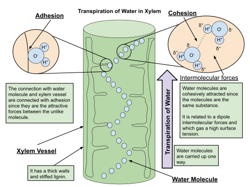

1. 课本书
植物会出汗 | Plants also sweat
炎热的夏天，踢完一场球赛，每个队员都已经是汗如雨下。如果这个时候，能到大树下歇一歇，喝口凉开水，吃个冰激凌，放松放松肌肉，缓解一下疲劳，那一定是件美事，可以很快恢复活力。不过，你知道吗，我们之所以能在大树下享受这种湿润荫凉，也是因为大树在“出汗”呢！
人体要保持相对稳定的温度，一旦温度上升，大脑就会指挥我们的身体赶快出汗，这时所有汗腺开始工作，汗水就从毛孔里冒了出来。大树出的“汗”，通常是从叶片的气孔里冒出来的，不过，这种“出汗〞可不是为了降低温度，而是为了运输养分。
我们都知道这样的常识一植物的根会吸收养分和水分，但是你有没有想过，植物是怎么控制这些成分，把它们运输到十几米甚至上百米的树梢的呢？
最初人们认为大树是通过毛细作用来提水的。所谓“毛细作用”简单来说，就是水会顺着很细很细的管子向上“爬”，我们在家可以用个比较细的玻璃管体验一下。玻璃管越细，水爬升的高度就越高。可是，经过测验计算发现，以大树输送管道的尺寸产生的毛细作用，根本无法把水分送到几十米高的地方。
实际上，大树利用的是枝千顶端的那些叶片。叶子通过不停地向空气中释放水汽，迫使树干中的水分自动前来补充，这样节节传递，就像是把树根吸收的水分给抽了上来。因为跟蒸腾作用有关，这种特殊的提升力就被称为“蒸腾拉力”。不过，这个大树内部的供水系统具体的运转状况是怎么样的，它们遵守的是一种什么样的秩序，为什么会产生如此巨大的拉力，到目前还是个谜。
改编自《科学松鼠会》，作者：史军

1.1. 生词
| No. | Word | Meaning |
|---|---|---|
| 1 | 炎热 | yán rè - adj. scorching, burning hot |
| 2 | 歇 | xiē - v. to rest, to take a rest |
| 3 | 开水 | kāi shuǐ - n. boiled water |
| 4 | 冰激凌 | bīng jī líng - n. ice cream |
| 5 | 肌肉 | jī ròu - n. muscle |
| 6 | 恢复 | huī fù - v. to recover, too regain |
| 7 | 湿润 | shī rùn - adj. moist, humid |
| 8 | 荫凉 | yìnliáng - adj. shady and cool |
| 9 | 指挥 | zhǐhuī - v. to command, to direct |
| 10 | 赶快 | gǎnkuài - adv. at once, hurriedly |
| 11 | 汗腺 | hànxiàn - n. sweat gland |
| 12 | 毛孔 | máo kǒng - n. pore |
| 13 | 冒 | mào - v. to emit, to give off, to send out |
| 14 | 片 | piàn - n. flat and thin piece |
| 15 | 常识 | cháng shí - n. common knowledge |
| 16 | 吸收 | xī shōu - v. to absorb, to take in |
| 17 | 控制 | kòngzhì - v. to control, to take command of |
| 18 | 成分 | chéng fèn - n. element, component, ingredient |
| 19 | 梢 | shāo - n. tip, thin end of a twic, etc. |
| 20 | 管子 | guǎn zi - n. tube, pipe |
| 21 | 玻璃 | bō li - n. glass |
| 22 | 根本 | gēn běn - adv. (often used in the negative) at all, simply |
| 23 | 枝干 | zhī gàn - n. branch, limb |
| 24 | 释放 | shì fàng - v. to release, to emit |
| 25 | 自动 | zì dòng - adv. voluntarily, spontaneously, automatic |
| 26 | 补充 | bǔchōng - v. to supplement, to replenish |
| 27 | 抽 | chōu - v. to draw, to obtain by drawing |
| 28 | 蒸腾 | zhēngténg - v. (of steam) to rise, to vaporize |
| 29 | 特殊 | tè shū - adj. special, particular |
| 30 | 内部 | nèibù - n. inside, interior, inner part |
| 31 | 系统 | xì tǒng - n. system |
| 32 | 状况 | zhuàng kuàng - n. condition, situation, state |
| 33 | 秩序 | zhìxù - n. order, orderly state |
| 34 | 测验 | cè yàn - v. to test |
1.2. 注释
- 赶快
phó từ, ý nghĩa là “抓紧时间、加快速度”（bắt kịp thời gian, gia tăng tốc độ）.Ví dụ:
- 我下个月要搬家，得赶快找房子。
- 这份材料下午开会要用，你赶快把它复印一下。
- ·····一旦温度上升，大脑就会指挥我们的身体赶快出汗，······
（1）你要赶快出发，要不该赶上堵车了。
（2）A：我们快要到了，你赶快收拾吧。
B：好，我马上就收拾好了
（3）A：你怎么还在玩儿游戏？火车票预定了吗？
B：还没呢，我现在就赶快预定。
- 片
“片”，danh từ, đồ vật có bề mặt phẳng, mỏng, thường không quá lớn. Ví dụ:
- 瓶子里装着满满的石头、玻璃碎片和沙子。
- 大树出的“汗”，通常是从叶片的气孔里冒出来的，······
“片”，còn là lượng từ, dùng để chỉ những đồ vật thành phiến (成片); cũng có thể dùng với âm thanh, cảnh sắc…Ví dụ:
- 窗外有一棵大树，秋风中，叶子一片片地掉落下来。
- 同学们听了，发出一片热烈的欢呼声。
（1）A：我来切菜吧，土豆怎么切？
B：你可以把土豆切成片。
（2）今天早上我吃了片西瓜，现在还不太饿。
（3）A：这药怎么吃？
B：每天吃饭前你应该吃两片药。
- 根本
“根本”, danh từ, bộ phận quan trọng nhất của sự vật. Ví dụ:
- 教育是国家的根本。
- 这个办法只能救急，不能从根本上解决问题。
“根本”, còn là tính từ, ý nghĩa là “主要的、最重要的、起决定作用的”（chủ yếu, quan trọng nhất, đóng vai trò quyết định）
- 谈判还算顺利，一些根本的问题都谈好了。
- 政府工作应从人民的根本利益出发。
“根本”, còn là phó từ, biểu thị từ đầu đến cuối, trước sau như một, thường dùng trong câu phủ định. Ví dụ:
- 有时候我会梦见参加考试，可是却发现自己根本读不懂考试的题目。
- 可是，经过测验计算发现，以大树输送管道的尺寸产生的毛细作用，根本无法把水分送到几十米高的地方。
“根本”, khi làm phó từ, còn biểu thị triệt để, hoàn toàn. Ví dụ:
- 事情已经根本解决了。
- 他根本就是在故意找我们的麻烦。
（1）A：你觉得他说的话有道理吗？
B：他一开始说话的时候根本没有道理，我觉得你还是听听玛丽的建议吧
（2）搬家要整理的东西太多了，我根本拿不动。你帮帮我吧。
（3）秦国人在赵国四处散布谣言，说秦军最怕赵括，那个谣言，根本就是故意想让赵括对他自己的实力过分自信。
- Phân biệt 特殊 và 特别
共同点：Khi làm tính từ, đều có nghĩa là không giống với bình thường.
- 如：对我来说， 他是一个特殊/特别的人。
不同点：
| 特殊 | 特别 | |
|---|---|---|
| 1 | Thường dùng trong văn viết. 如：因为跟蒸腾作用有关，这种特殊的提升力就被称为“蒸腾拉力“ |
Văn viết hay khẩu ngữ đều có thể sử dụng. 如：她穿衣服总是很特别。 |
| 2 | Không có cách dùng này. | Còn có thể làm phó từ. Ý nghĩa là 格外 “ đặc biệt“. 如：我特别喜欢学中文，尤其是汉子。 |
1.3. 扩展
问题：动、植物
| No. | Word | Meaning |
|---|---|---|
| 1 | 老鼠 | lao3shu3 - mouse |
| 2 | 蜜蜂 | mi4feng1 - honey bee |
| 3 | 蛇 | she2 - snake |
| 4 | 狮子 | shi1zi - lion |
| 5 | 兔子 | tu4zi - rabbit |
| 6 | 大象 | da4xiang1 - elephant |
| 7 | 猴子 | hou2zi - monkey |
| 8 | 猪 | zhu1 - pig |
| 9 | 蝴蝶 | hu2die2 - butterfly |
| 10 | 昆虫 | kun1chong2 - insect |
| 11 | 小麦 | xiao3mai4 - wheat |
| 12 | 竹子 | zhu2zi - bamboo |
| 13 | 根 | gen1 - root |
| 14 | 果实 | guo3shi2 - fruit |
1.4. 运用
你所知道的一种植物
越南大米（Oryza sativa）是稻属一年生草本植物，属于禾本科（Poaceae）。这种植物在越南的湿热气候中茁壮成长，特别适合湄公河三角洲和红河三角洲等低地地区。越南全年高温多雨的气候为水稻生长提供了理想条件。
越南的水稻种植独具特色，每年可以收获三季稻。这种密集的种植模式充分利用了越南的气候优势。该国气候的显著特点是高温（平均20-35°C）和充沛降雨（年降雨量1500-2000毫米），为水稻全年生长创造了完美环境。
人类驯化水稻的历史可追溯到约9000年前在珠江流域。经过数千年的选择和培育，形成了适应不同生态环境的多样化品种。越南的稻米品种以其独特的香味和口感而闻名，如”香米”就是其中的代表。
如今，越南是世界第三大稻米出口国，在全球粮食安全中扮演着重要角色。越南大米不仅是国内主食，还为全球数亿人提供营养。得益于其三季稻作系统，越南能够保持稳定的稻米产量。然而，面对气候变化带来的挑战，越南正致力于开发更具抗性的水稻品种，以确保未来粮食供应的稳定性。
1.5. 口语
你喜欢什么样的植物？
植物的多样性和功能性使我对它们产生了广泛的喜爱。食用植物和蔬果是我的最爱之一，它们不仅为人类提供了必要的营养，还丰富了我们的饮食文化。想象一下没有新鲜蔬菜和香甜水果的世界，那将多么单调啊！鲜花则是大自然的艺术品，它们绚丽的色彩和优雅的姿态为我们的生活增添了无尽的美丽。无论是盛开在野外的花朵，还是精心培育的园艺品种，每一朵花都有其独特的魅力。而大树则是地球的守护者，它们不仅为我们提供了清新的氧气和舒适的阴凉，还是许多生物的家园。从某种意义上说，每一种植物都有其存在的价值和意义，因此我珍视所有的植物，欣赏它们为我们的星球带来的生机与活力。
在你的国家最常见或最有名的职务是什么？
在越南，大米无疑是最具代表性和最重要的植物。作为主食，大米深深植根于越南的文化和日常生活中。越南的地理条件非常适合水稻种植，特别是在红河三角洲和湄公河三角洲这两个肥沃的地区。越南大米以其独特的香味和口感而闻名于世，其中最著名的品种是“香米”。水稻种植不仅仅是一种农业活动，它还塑造了越南的乡村景观和社会结构。每年三季的稻作周期体现了越南农民的勤劳和智慧。此外，大米在越南的经济中扮演着重要角色，是主要的出口商品之一。从传统的农耕仪式到现代化的种植技术，大米见证了越南的历史变迁，并将继续影响国家的未来发展。
在你的生活中，植物起了什么作用？
植物在我的生活中扮演着多重而重要的角色。首先，作为粮食来源，它们是我日常饮食的基础。无论是主食的大米、小麦，还是各种蔬菜，都为我提供了必要的营养。果实则带来了额外的味觉享受和维生素补充。木材是另一个重要方面，它被用于制作家具、建筑材料，甚至是纸张，使我的生活更加舒适和便利。在一些地区，木柴仍然是重要的燃料来源，为烹饪和取暖提供能量。然而，植物最关键的贡献可能是它们产生的氧气。通过光合作用，植物不断净化空气，为地球上的生命提供赖以生存的氧气。此外，植物还美化了我的生活环境，无论是室内的盆栽还是户外的花园，都为我的生活增添了自然的活力和美感。
1.6. 朗读
朋友送我一对珍珠鸟。放在一个简易的竹条编成的笼子里，笼内还有一卷干草，那是小鸟儿舒适又温暖的巢。
有人说，这是一种怕人的鸟。我把它挂在窗前，那儿还有一大盆异常茂盛的法国吊兰。我使用吊兰长长的、串生着小绿叶的垂茎蒙盖在鸟笼上，它们就像躲进深幽的丛林一样安仝…从中传出笛儿般又细又亮的叫声，就格外轻松自在了。
我很少扒开叶茎瞧它们，它们便渐渐敢伸出小脑袋瞅瞅我。我们就这样一点点熟悉了。
三个月后，那一团愈发絮茂的绿茎里边，发出一种尖细又娇嫩的呜叫。我猜到，是它们有了雏儿。我呢，决不掀开叶片往里看，连添食加水时也不峥大妤奇的眼去惊动它们。过不多久，忽然有一个更小的脑袋从叶间探出未。哟，雏儿!正是这小家伙!瞧，多么像它的父母：红嘴红脚，蓝灰色的毛，只是后背还没生出珍珠似的圆圆的白点；它好肥，整个身子好像一个茎松的球儿。
2. 作业本
2.1. 听力
1. 男：天气太热了，踢个十分钟就快受不了了，我得去那棵树下面歇歇。
女：喝点儿温开水，可别吃冰激凌什么的。
问：女的有什么建议？（C喝温水）
2. 男：中国的植树节是哪天？
女：3月12号，这是孙中山先生逝世（pass away）的日子，他一直提倡植树造林（trồng cây gây rừng）。
问：中国的植树节为什么是3月12号？（D纪念伟人）
3. 女：你昨天去看小兰了？她恢复得怎么样？
男：挺好的，再过两天就可以出院了。
问：从对话中可以知道什么？（B小兰住院了）
4. 男：办公室那台新复印机（photocopier, máy photo）真不错！
女：是啊，能自动换纸、自动换页，还能自动装订（đóng bìa）呢！
问：他们在谈论什么？（C新设备）
5. 女：明天的活动很重要，你们都不要淘气（nghịch ngợm）啊！
男：老师，保证一切行动听指挥！
问：男的是什么意思？（D我们都听您的）
6. 男：孩子还小呢，你要控制一下自己的情绪，别吓着他。
女：每次看到他这样，我就气不打一处来。（tức đến nỗi không chịu nổi）
问：女的怎么了？（C为孩子生气）
7. 女：大树是通过毛细作用来提水的吗？
男：以前大家都认为是，但现在人们发现是蒸腾拉力在起作用。
女：那具体是怎么运转的呢？
男：这一点到目前还是个谜。
问：关于蒸腾拉力，下列哪项正确？（C帮助大树提水）
8. 男：你跟小刘谈恋爱了？
女：胡说！我根本不认识他。
男：你就别藏着掖着（giấu giếm）了，我都没说是哪个小刘，你就说不认识。
女：反正不管哪个小刘，都不是我男朋友。
问：女的是什么意思？（D他没有谈恋爱）
9. 女：你这次测验怎么样？
男：不太好。我觉得很多题都跟课后的补充生词有关，但我以为补充生词不会考，都没复习。
女：之前老师还特意强调过这一点呢！
男：其实我听见了，但复习的时间不太够，就没管。
问：男的为什么考得不太好？（C生词没掌握好）
10. 男：目前人流量很大，请大家自觉遵守秩序，准备好您的车票，排队进站安检。
女：您好，我是在网上订的票，没有车票，可以凭身份证进站吗？
男：可以，如果您需要车票，也可以到那边自动取票机上去取。
女：好的，谢谢。
问：男的最可能是什么人？（D车站工作人员）
11-12.
仙人掌是一种生命力很强的植物，它们生长在干旱的沙漠地区，为了适应缺水的气候，它们的叶子演化成短短的小刺，以减少水分的蒸发，同时也可以作为防止动物吞食的武器。它们的根非常发达，一旦下雨就会大量吸收水分，从而满足自身的生长需要。
11．仙人掌最适应下列哪种环境？（A沙漠）
12．仙人掌的根有什么特征？（D大量吸收水分）
13-14.
你见过含羞草吗？它非常奇特：名字叫作草，但它也会开花；说它是一种植物，但它就像动物一样，懂得“害羞”。其实，这是因为它对光、热很敏感，只要我们用手轻轻碰碰它，本来展开的叶子就会向下合起来，要过几分钟后才会重新放开。含羞草原产于热带美洲，现在广泛分布于世界热带和亚热带地区。含羞草的花、叶都具有较好的观赏效果，且较易成活，适宜在阳台盆栽。它还可以止血、止痛，当作药材使用。
13．人们为什么叫这种植物“含羞草”？（B它很敏感）
14．关于含羞草，下列哪项正确？（D有药用价值）
2.2. 阅读
15-18.
有些患者曾经出现过这样的现象：早上醒来的时候，发现自己身体不受15C控制，头脑似乎是清醒的，但被一些固定内容占据着，无法集中精力，自己不能指挥自己的大脑和身体。这种状态持续一段时间后，或者再次睡着醒来，就会16A恢复正常，只是感觉身体17D特别累。如果这样的情况不是偶尔出现，而是比较多发，可能有两个原因：支配肌肉的神经或者神经肌肉接头处出现问题，导致神经支配肌肉“不灵”；18A 或者是中枢神经系统，也就是大脑的运动神经元损伤。这个时候，应该尽快到专业的医院进行检查。
19.B人体出汗是为了降低体温
人体要保持相对稳定的温度，一旦温度上升，大脑就会指挥我们的身体赶快出汗，这时所有汗腺开始工作，汗水就从毛孔里冒了出来。大树也会“出汗”，这“汗”通常是从叶片的气孔里冒出来的，不过，这可不是为了降低体温，而是为了运输养分。
20.C玻璃管太粗时水无法爬升
所谓毛细作用，简单来说，就是水会顺着很细很细的管子向上“爬”。我们在家可以用一个比较细的玻璃管体验一下。把细玻璃管插人装有水的杯中，就能发现管内的水会慢慢上升，高于管夕卜，玻璃管越细，水爬升的高度就越高。
21.D有很多赞美松竹梅的作品
冬天到了，北风带来了远方的寒流，鹅毛大雪漫天飞舞，仿佛雪花仙子表演天女散花。这时候，其他植物都开始“放寒假”了，可是，还有三种植物仍然在寒风中挺拔着身姿，它们就是松、竹、梅，我们把它们称为“岁寒三友”。在中国的传统文化中，它们象征着坚强、高洁，很多人写诗作画，赞美它们。
22.C种子存在于植物的果实中
有很多植物需要靠蝴蝶这样的昆虫来传授花粉，然后才能结出果实。如果没有这样的昆虫，很多植物将会只开花、不结果，也就没有种子寰衍下去。除了蝴蝶外，类似的昆虫还有蜜蜂等。
23-25.
现代人承受着巨大的生活工作压力，通过正确的方式缓解疲劳感、保障身心健康，显得十分有必要。下面，我们就给大家介绍缓解疲倦的保健方法以及饮食妙计，希望对忙碌的上班族有所帮助。
如果有轻微的脑疲劳现象，不必过分紧张，应该放松身心，做到劳逸结合。这时候，适量地做一些脑部运动，比如轻轻拍打头部、搓搓耳朵，就可赶走疲劳。睡觉可不是能消除疲劳的最好方法，而应该适当做一些体育运动，如打打球、做做操等强度不大的有氧运动，当大脑的氧气供应充足时，疲劳会自然消失。还有常喝荼、多晒太阳，也对缓解疲劳有好处。秋季干燥，多洗澡多揉搓身体，可以使人精神焕发。每天洗脚时用手按麾脚心处，也有解除疲劳的效果。让牙齿多活动，相互瞌一瞌，既可以保持牙齿健康，也能让人放松。经常梳理头发可以扩张皮下毛细血管，促进新陈代谢，保持头脑清醒。
最后给大家介绍一道增强呼吸系统功能、抗疲劳的天门冬萝卜汤：将天门冬15克切成2~3毫米的片，用水约2杯，以中火煎煮15分钟，用布过滤，留汁备用；火腿150克切成长条形薄片；萝卜300克切丝。锅内放鸡汤500毫升，火腿下锅，煮沸后将萝卜丝放入，并将天门冬汁加入，盖锅煮沸后，加盐，再略煮片刻即可。食前加葱花胡椒粉等调味。
23. A梳头发
24. C脑疲劳是大脑缺氧的一种反应
25. D煮
26-28.
树木作为现代高尔夫球场设计中必不可少的一项元索，其地位并非生而有之。事实上，在很长一段时间里，它是作为反面教材被严格禁止的_以“美国高尔夫球场设计之父”查尔斯-麦克唐纳为首的老一代设计师认为，树木在球场的存在会触发球员击球的不公平性。然而，也正是在美国这片新大陆上，树木开始被大量引用到球场设计中去，更多的美闰设计师认为，只有当环境条件元法让树木生长的时候，才能成为其不存在于球场的理由。那么，这两种观点是如何形成的?我们在从事球场设计时，又该如何运用树木这种设主十元素呢?
在高尔夫这项运动的演变过程中，苏格兰作为其诞生地，有着得天独厚的地理条件一这里有其他地方没有的林克斯场地，即海边草原沙地。这是长年累月泥沙通过河流冲积、堆积而成的海滨滩涂地。由于当地的气候条件和常年受大风的影响，这些场地中并没有树木，当然，这里也并不适合树木的生长。
基于苏格兰独特的地理背景，当时的设计师认为大自然就是最好的高尔夫球场，即海滩林克斯这种类型的球场才是最好的球场。著名的设计师唐纳德’罗斯因此提出了这样一种观点：“上帝创造了高尔夫球涧，设计师的任务只是发现它们。”因此，早期的高尔夫球场就是大自然的杰作，也被称为“无树球场”，设计师只是在其间指定出球场的特征区域，如发球台、果岭等，然后便开展竟技运动。
由于欧洲传统文化与思想偏于保守，因此，虽然时过境迁，但这种传统的理念和古典的手法却一直延续至今。这既是自然地理风貌使然，也是传统保守思想在高尔夫设计领域的延伸一它虽然己成为了一种风格，但却并不代表着这样的球场设计是完美的。诞生于这种设计理念的球场，其背景显得过于单调。虽然有许多人意识到了这些弊端，但一味效仿欧洲传统的设计理念却总在束缚着球场设计的进一步发展，因此也才有了以后的设计颤币仓哑新的设计演变，才有了球场景观因树木的加人而带来的丰富变化。
26.B反对
27.C美国设计师
28.C应该寻求新变化
2.3. 书写
测验、特殊、秩序、歇、恢复
上周五，我的公司正在进行年度绩效测验。办公楼里，员工们专注地坐在各自的工位上，整个楼层保持着井然有序的氛围。突然，刺耳的警报声打破了宁静，所有人都被指示立即歇下手头的工作，迅速撤离大楼。原来是一次预先安排的特殊消防演习。当警报解除后，员工们秩序地返回各自的工位，逐渐恢复正常工作节奏。这次突发的演习不仅检验了公司的应急反应能力，也考验了员工们在压力下的临场应变能力。